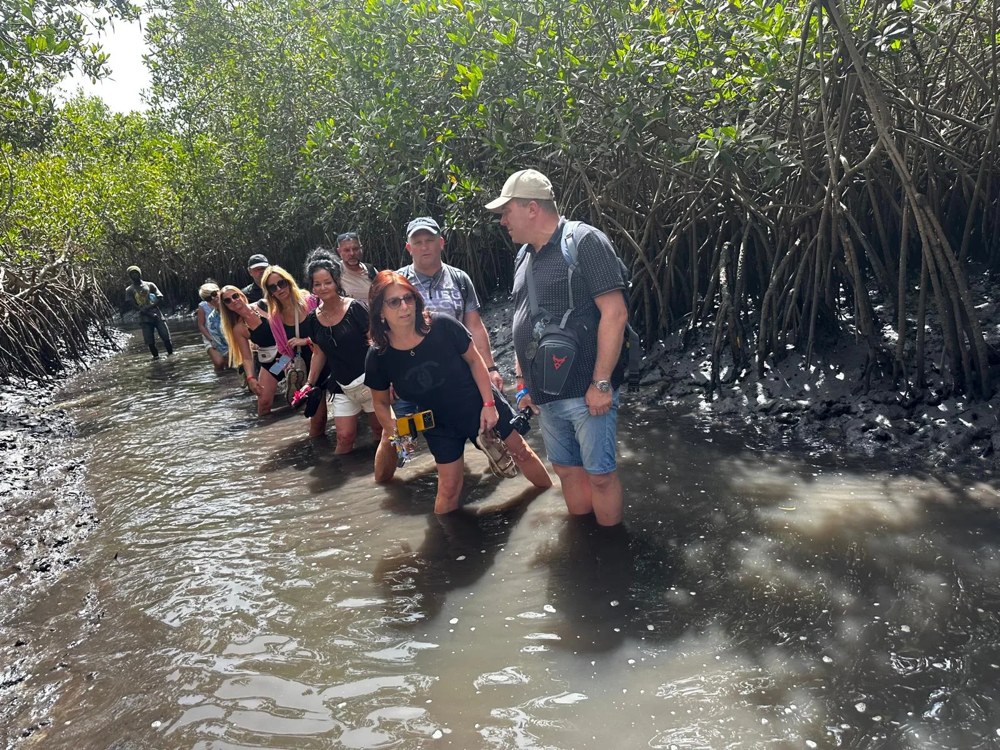
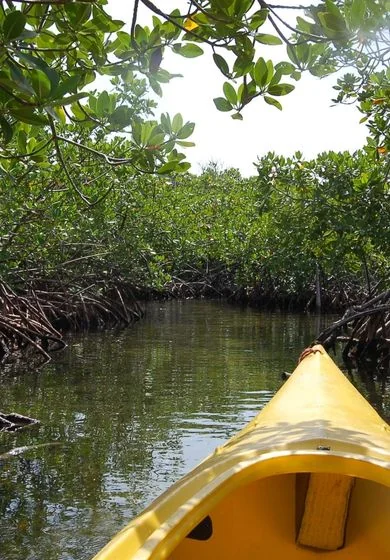

Plan the right outing
Tell us your kayaking experience, preferred pace and pickup area. We confirm a suitable route and the day’s arrangements.

Individually quoted
Explore quiet mangrove channels by kayak, with time for birdlife, river scenery and a closer look at life along the water. Ask us to plan an outing that fits your pace.
Explore quiet mangrove channels by kayak, with time for birdlife, river scenery and a closer look at life along the water. Ask us to plan an outing that fits your pace.
Plan this journey with Lamin and the GambianTour team. Choose English or Polish guiding by arrangement and a route that fits your holiday.

The final order and timings are confirmed for your departure.
Tell us your kayaking experience, preferred pace and pickup area. We confirm a suitable route and the day’s arrangements.
Explore mangrove waterways and pause to enjoy the changing river scenery and birdlife.
Finish the outing and follow the transfer arrangements agreed for your group.
Kayaking route and local arrangements confirmed in your personal quote
Transport, equipment and guiding specified before booking
Explore quiet mangrove channels by kayak, with time for birdlife, river scenery and a closer look at life along the water. Ask us to plan an outing that fits your pace.
Send your date, group size and hotel location. We’ll reply with a suitable departure or private arrangement and a clear quote.
Ask Lamin on WhatsApp